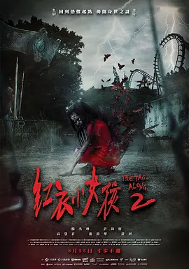

6.5
紅衣小女孩2
The Tag-Along 2
2017
中国台湾
评分 6.5
导演:
程伟豪
演员:
杨丞琳 / 许玮甯 / 高慧君 / 龙劭华 / 黄河
类型:
恐怖,惊悚
剧情简介
社工师李淑芬整日奔走于各类案件之间，日复一日的压力让她几乎无暇顾及女儿雅婷。某天，她正在调查一起疑似虐童事件，刚与母亲林美华展开盘问，便接到学校打来的急电——雅婷在下午放学后离奇失踪。淑芬匆忙赶到校园，调阅监控时，那道扎眼的红色身影骤然出现：一个步伐僵硬、神情空洞的小女孩牵着雅婷离开，像是走入阴影深处。随着救难队深入山林，废弃医院里积满尘土的走廊、被风掀动的病历纸、夜里传来的脚步声，都让淑芬意识到女儿可能被卷入某种更为诡秘的力量。当她在黑暗的病房中找到的并不是雅婷，而是失踪多时、精神恍惚的电台主持人沈怡君时，那股不祥的阴影仿佛更紧地缠上了她。淑芬将怡君带回家，希望从她支离破碎的记忆中拼凑出女儿的下落。然而夜里传来的低语、无人房间里的开关声、怡君忽明忽暗的神情，都让她逐渐怀疑，自己带回来的究竟是不是“人”。都市传说中的红衣小女孩再次浮现，像是潜伏在现实与诅咒之间的媒介，将过去的恐惧与新的危机一同拉入淑芬的生活。在理性与母爱推动下，她必须一次次踏入那些令人心悸的空间，寻找女儿，也直面那股在阴暗处滋生的力量。影片以更大的范围、更深的执念，将“被带走的人”与“留下来的人”的恐惧层层推向更深处。